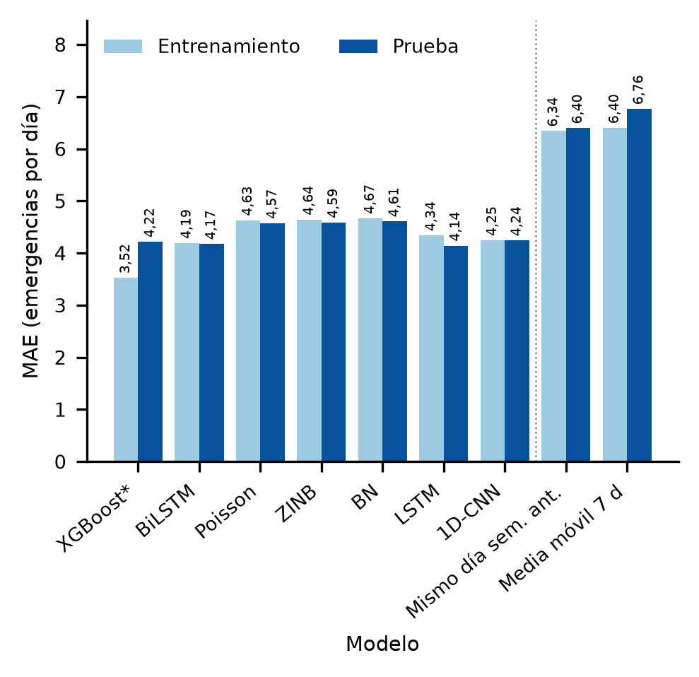

Industrial + Ciencia de Datos
Germán De Armas
Científico de datos. Modelado predictivo, diseño de la comparación de técnicas e integración del sistema.
Proyecto de grado · Ingeniería Industrial · UTB 2026
Un modelo analítico que pronostica cuántas emergencias de gas natural llegará a atender Surtigas en Montería cada día. Reduce el error del pronóstico diario un 34 % frente a los métodos de referencia.
01 / El problema
Surtigas atiende las emergencias de su red de gas solo después del reporte del usuario.
Las cuadrillas se despachan cuando el incidente ya ocurrió. Entre 2017 y 2026 eso significó 50 195 emergencias atendidas sin saber cuántas llegarían cada día.
La analítica de redes de gas venía concentrada en la detección física de fugas. La pregunta de planificación —cuántas emergencias llegarán mañana al centro de control— no tenía respuesta para una ciudad intermedia colombiana.

02 / La pregunta
¿Reduce un modelo predictivo el error del pronóstico diario frente a los métodos de referencia?
El trabajo siguió CRISP-ML(Q), con la gestión de procesos de negocio como marco transversal, y comparó siete técnicas bajo un protocolo temporal sin fugas de información.
La técnica y la ventana de entrada se eligieron con un diseño factorial 4×5 con tres réplicas sobre el bloque de validación. El conjunto de prueba se reservó para una única evaluación final.
¿Cuántas emergencias llegarán cada día al centro de control?
03 / Método
Siete técnicas y un protocolo temporal sin fugas.
Se entrenaron cuatro técnicas de aprendizaje automático (XGBoost, LSTM, BiLSTM y una red convolucional unidimensional) y tres modelos de conteo (Poisson, binomial negativa y su versión inflada en ceros). Minimizar las fugas de información fue la regla del protocolo.
Toca un bloque para ver su figura.
04 / Resultados
XGBoost con ventana de 40 días fue el campeón.
En el año de prueba el error absoluto medio fue de 4,22 emergencias por día, un 34 % menor que el mejor método de referencia (6,40). XGBoost fue significativamente mejor que los modelos de conteo y que las referencias, y sin diferencia significativa frente a las redes neuronales.
La ZINB aporta la probabilidad de días de alta demanda y la red bayesiana explica el nivel: los festivos y los fines de semana concentran los días de baja demanda. El tiempo de respuesta de las emergencias no controladas se predice con un error de 0,15 h.


05 / Impacto
El pronóstico se traduce en horas de cuadrilla y en dinero.
Traducida a tiempo de cuadrilla, la mejora equivale a unas 1 468 horas anuales menos de dotación mal dimensionada. En el escenario simulado, repartir las cuadrillas entre sectores según la probabilidad de cada uno reduce en 24 % las horas en déficit con la misma dotación.
El punto de equilibrio entre déficit y horas ociosas es de cuatro cuadrillas por día. Ajustar la dotación al pronóstico cuesta menos que fijar ese número y deja menos déficit sin cubrir.
Con la valoración regulatoria vigente, la cuadrilla de reserva protege más el cumplimiento pero no es rentable: solo conviene si la probabilidad anual de una multa máxima supera el 3,2 %.
Toca un bloque para ver su figura.
06 / Equipo
Cuatro estudiantes de Ingeniería Industrial de la Universidad Tecnológica de Bolívar.
Industrial + Ciencia de Datos
Científico de datos. Modelado predictivo, diseño de la comparación de técnicas e integración del sistema.
Industrial + Ciencia de Datos
Científico de datos. Ingeniería de datos, evaluación de modelos y comparación de técnicas.
Industrial + Finanzas
Evaluación financiera. Análisis costo-beneficio, VPN, TIR y escenario de asignación por sector.
Ingeniería Industrial
Ingeniería de procesos. Comprensión del negocio y de los datos, gestión de procesos de negocio y contexto normativo.
07 / Descarga
Descarga el paper completo del proyecto.